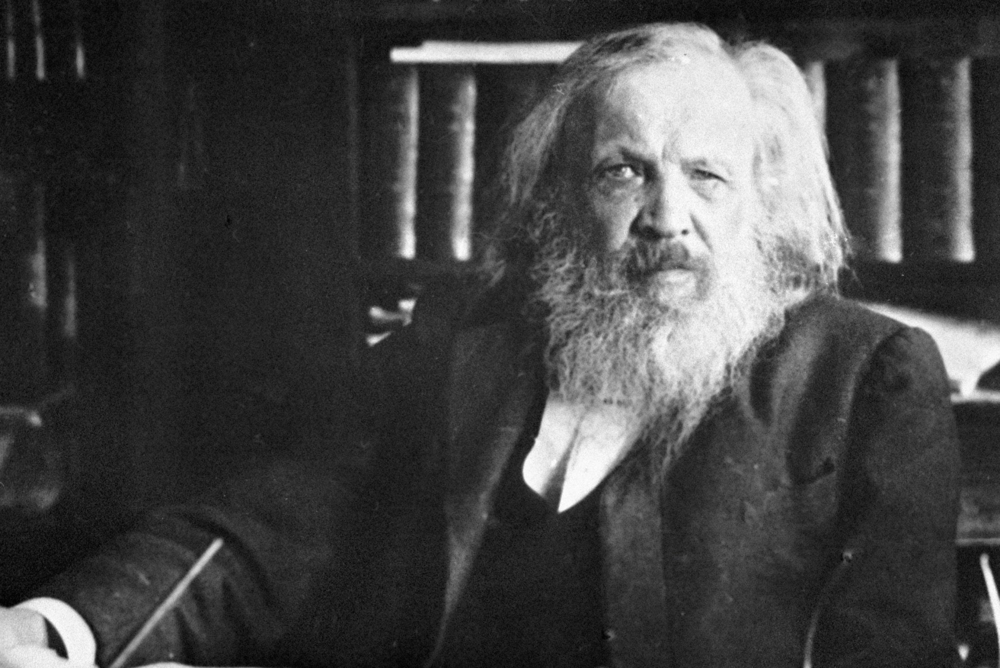

Менделеев, Дмитрий Иванович

Дмитрий Иванович в своем кабинете
Хроника творческой жизни
- 1841 — поступил в Тобольскую классическую гимназию.
- 1855 — с золотой медалью окончил отделение естественных наук физико-математического факультета Главного педагогического института в Санкт-Петербурге.
- 1855 — назначен старшим учителем естественных наук Симферопольской мужской гимназии.
- 1855—1856 — старший учитель в гимназических классах при Ришельевском лицее в Одессе.
- 1856 — блестяще защитил диссертацию «на право чтения лекций» — «Строение кремнезёмных соединений» (оппоненты Александр Воскресенский и Михаил Скобликов), с успехом прочёл вступительную лекцию «Строение силикатных соединений»; в конце января отдельным изданием в Санкт-Петербурге вышла в свет кандидатская диссертация Д. И. Менделеева «Изоморфизм в связи с другими отношениями кристаллической формы к составу»[32]; 10 октября присвоена учёная степень магистра химии.
- 9 (21) января 1857 — утверждён в звании приват-доцента Императорского Санкт-Петербургского университета по кафедре химии.
- 1857—1890 — преподавал в Императорском Санкт-Петербургском университете (с 1865 года — профессор химической технологии, с 1867 — профессор общей химии). В 1861/62 учебном году — во 2-м кадетском корпусе читал курс химии и физической географии; одновременно в 1863—1872 годах — профессор Санкт-Петербургского практического технологического института императора Николая I, руководил химической лабораторией института (1863—1872), в 1866—1872 годах преподавал органическую химию, также одновременно преподавал физику в Николаевских инженерных академии и училище; 1861—1864 — химию в Институте Корпуса инженеров путей сообщения.
- 1859—1861 — находился в научной командировке в Германии